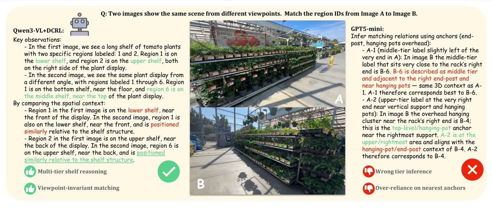

* Equal contribution · † Corresponding authors
The Question
Physical-world MLLMs need more than object recognition. Wide-baseline matching (WBM) asks a model to bind local cues into a globally consistent cross-view map — demanding geometry, semantics, fine-grained perception, and occlusion reasoning all at once.
We turn this physical-world spatial skill into a scalable, verifiable training signal and benchmark. View pairs harvested from RGB-D / SfM reconstructions come with exact, checkable correspondences — so models can be trained with verifiable rewards and evaluated without subjective judgement.
Objects and shelves move from frontal to oblique views, so local appearance alone is ambiguous.
Some annotated regions leave the frame or become hidden, requiring explicit unmatched predictions.
Dense visual prompts stress label reading, object boundaries, and small region discrimination.
Correct matches depend on scene layout, repeated structures, and stable anchors across views.
Method
We harvest RGB-D / SfM view pairs with verifiable supervision and train an 8B MLLM with format and matching rewards — no explicit chain-of-thought labels required.
RGB-D videos and SfM reconstructions provide real-world viewpoint diversity.
Depth or shared 3D landmarks produce 10–50 spatially separated correspondences per pair.
RL with a holistic matching reward turns matching into a transferable spatial skill.
Supervision is mined directly from multi-view reconstructions, so every region correspondence is geometrically grounded and machine-checkable. The model is optimized end-to-end with reinforcement learning using both format compliance and a holistic matching reward over all query regions:
Overlap bins schedule pairs from near-identical views toward hard wide baselines.
L1 unambiguous → L2 selective → L3 partial matching, with distractors and no-match cases.
Sampling evolves from sparse global anchors toward denser fine-grained spatial layouts.
Benchmark
A scalable, verifiable MLLM benchmark of 2,810 image pairs, curated from a 220k-pair corpus and balanced across data sources, scene types, and task difficulty levels.
One-to-one correspondences, with no distractors in either view.
Target-view distractors force the model to select the geometrically consistent counterpart.
Distractors and unmatched regions appear in both views, modeling occlusion and limited overlap.
Results
DCRL reaches 70.5 F1 on ReasonMatch-Bench, outperforming all evaluated open- and closed-source MLLM baselines while transferring to related spatial-reasoning benchmarks.
| Model / Setting | F1 |
|---|---|
| Qwen3-VL-8B-Instruct | 27.5 |
| GPT-4o (241106) | 33.5 |
| Claude-4.5-Sonnet | 41.7 |
| Gemini-2.5-Pro | 42.8 |
| Qwen3-VL-235B | 49.2 |
| GPT-5-Chat | 51.5 |
| GPT-5-mini | 57.9 |
| Qwen3-VL-8B + DCRL | 70.5 |
| Benchmark | Base | DCRL | Gain |
|---|---|---|---|
| ReasonMatch | 27.5 | 70.5 | +43.0 |
| OmniSpatial | 43.6 | 48.9 | +5.3 |
| MindCube | 40.0 | 43.5 | +3.5 |
| SAT Real | 70.0 | 75.3 | +5.3 |
| Strategy | OmniSpatial | SAT Real | ReasonMatch |
|---|---|---|---|
| Base | 43.6 | 70.0 | 27.5 |
| SFT | 42.6 | 41.3 | 51.0 |
| DCRL | 48.9 | 75.3 | 70.5 |
| Training strategy | ReasonMatch F1 | Δ vs. uniform |
|---|---|---|
| Uniform sampling | 65.3 | — |
| Easy-only samples | 59.9 | −10.6 |
| Hard-only samples | 62.3 | −8.2 |
| Dynamic curriculum | 70.5 | +5.2 |
Qualitative
Given two views of the same scene, the model must map region IDs from image A to image B. DCRL reasons over multi-tier scene structure; the base-style model over-relies on the nearest anchors.

Open Release
The release is designed for reproducible evaluation and recipe inspection. Training data is not included; training entry points are provided for users with compatible LMDB-formatted data.
Paper-specific training, reward, buffer, and evaluation code built on top of a vendored verl stack.
Open GitHubModelScope release includes reasonmatch_bench.tar.gz and ood_dataset.tar.gz.
Evaluation expects an OpenAI-compatible chat endpoint and reports benchmark summaries from saved predictions.
CitationCitation
If you find ReasonMatch useful, please cite our work.
@InProceedings{Zhong_2026_CVPR, author = {Zhong, Hao and Zhu, Muzhi and Zeng, Shenyan and Li, Anzhou and Chen, Cong and Geng, Hua and Shi, Duochao and Ye, Wentao and Lin, Tao and Chen, Hao and Shen, Chunhua}, title = {Eliciting Complex Spatial Reasoning in MLLMs through Wide-Baseline Matching}, booktitle = {Proceedings of the IEEE/CVF Conference on Computer Vision and Pattern Recognition (CVPR)}, month = {June}, year = {2026}, pages = {16768-16778} }